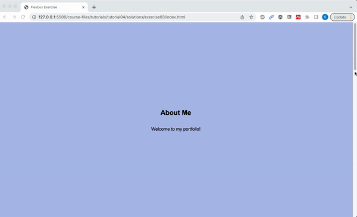
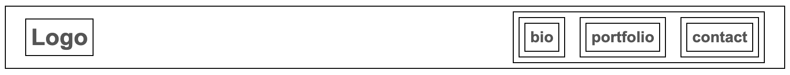
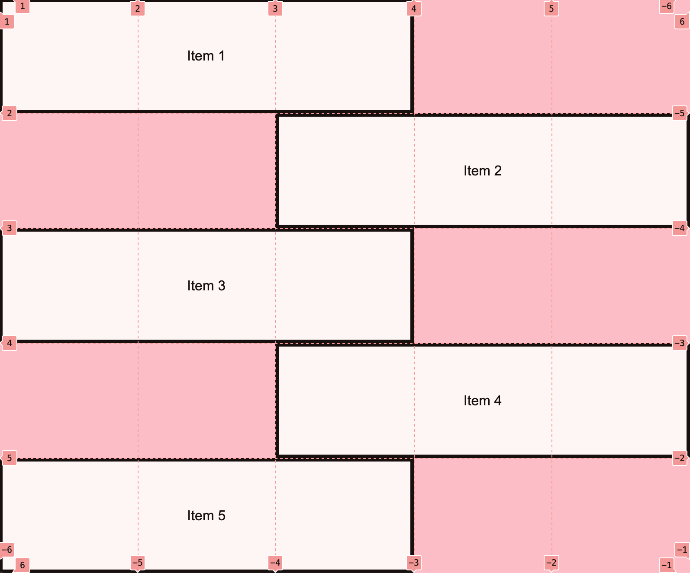
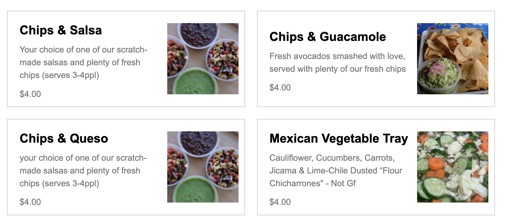
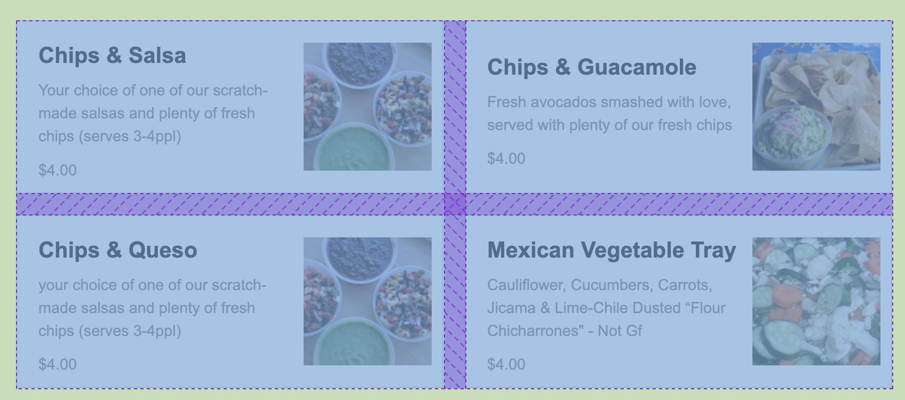
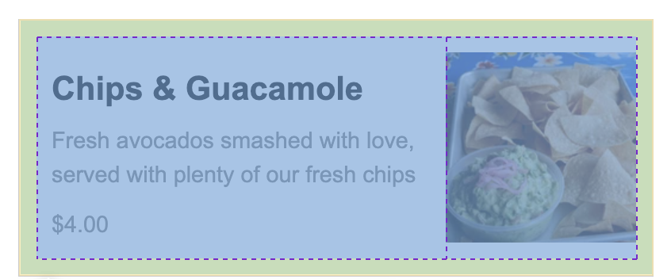

Assignments > HW4: CSS Grid & Flex Practice
Due on Mon, 02/20 @ 11:59PM. 20 Points.
Overview
This homework can be completed individually or in pairs. Working in pairs does not mean “splitting up the work” so that each person does half of the tasks. Rather, both parties should complete the tasks and help one another as questions arise.
References
CSS is best understood through practice, and by consulting online resources as needed. Here are a curated list of resources that should help you complete your tasks:
Common CSS Properties and Techniques
CSS Grid
- CSS Grid Garden
Please try to complete at least the first 10 levels - CSS Tricks: A Complete Guide to Grid
- Learn CSS Grid by Building 5 Layouts in 17 minutes
Flex
- Flexbox Froggy.
Please try to complete at least the first 10 levels - When to use Flex versus CSS Grid?
- CSS Tricks: A Complete Guide to Flexbox
- W3 Schools Flexbox Guide
Your Tasks
Download the hw04.zip file, unzip it and move the unzipped tutorial03 folder into the csci185/homework folder.
1. Flexbox Froggy
TODO: Instructions
2. Center-align elements within a container
Open 02-flex and create the layout shown below by editing the CSS file. You should not need to edit the HTML.

Please ensure that the following criteria are met:
- The height of each
sectionshould be the same as the height of the browser window. - The content inside of each
sectiontag should be centered horizontally and vertically. - Each
sectionshould have a different background color. - The content in each
sectionshould be stacked vertically
3. Create a Navigation Bar
Open 03-navbar, and try to make the following layout using flex. The navigation bar should also be anchored to the top so when you scroll, the nav bar stays fixed.

Hints:
- Both the
navandulelements will need to be put into flex mode. - Use the Chrome inspector to adjust the alignment properties.
- To turn the bullets off, set the
list-style-typeproperty tonone. - To create a fixed menu, see this code sample:
4. CSS Grid Garden
TODO: Instructions
5. Create this layout
Open 05-grid, and try to make the following layout using CSS Grid. You should not need to modify the HTML file. Note that the gridlines are just for demonstration, but they won’t actually be visible.

Note: You do NOT have to center the text inside of each section unless you want to.
6. Create the Taco Temple layout
Open 06-tacotemple, and try to make the following layout using CSS Grid. You should only have to edit the CSS file.

A few hints:
The main container is a grid with two columns – no rows specified). See grid lines:

The section container is also a grid with two columns. See grid lines:

7. Create the following mobile / responsive layout
TODO: Instructions. Something that works w/media queries!
What to turn in
Something about linking (make a demo)…